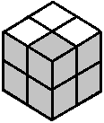
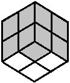

2x2 Beginner Tutorial
The first step is the most instinctive and intuitive step: we are going to solve a side.
For those of you familiar with a layer-by-layer approach, I really do mean a side, not a layer. We will position the layer in the next step.)
The First Three Pieces
Let's start with the white pieces because they are easy to see. Solving three of the four white pieces is usually not so bad. The goal is to get something like this:
Position the Last White Piece
Once you get three white pieces on a side, turn the cube so that that side is on the bottom.
Look to see where the last white sticker is. If the white sticker is in the top layer, spin the top until the sticker is over the unsolved bottom corner.
Sticker on front
Sticker on right
Sticker on top
If the white sticker is in the bottom layer but facing sideways, that's OK too. Just turn the cube so that the unsolved corner is in the front right of the cube, as below.
Sticker on front
Sticker on right
Solve the Last White Piece
When your cube looks like one of these five pictures, you can solve the white side with this algorithm: (RUR'U'). In the cubing community, this algorithm is called "Sexy Move". Repeat that algorithm until the white sticker has joined its three friends on the bottom of the cube. You won't need to use it more than five times.
For the more ambitious among you, I am also including a shortcut algorithm for each of these five cases.
Shortcut: (URU'R')
Shortcut: (RU'R'U)(RU'R')
Shortcut: (RU2R'U')(RUR')
Shortcut: (RUR'U')(RUR')
Shortcut: (RUR')
When the bottom of the cube is all white, you are ready to move on to the next step.
 Back
Back